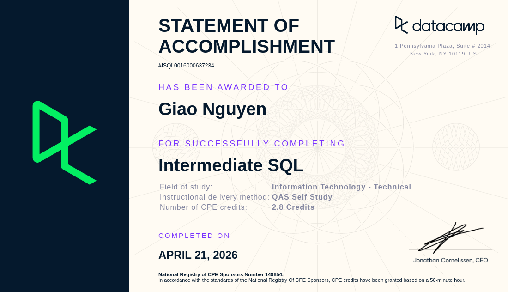
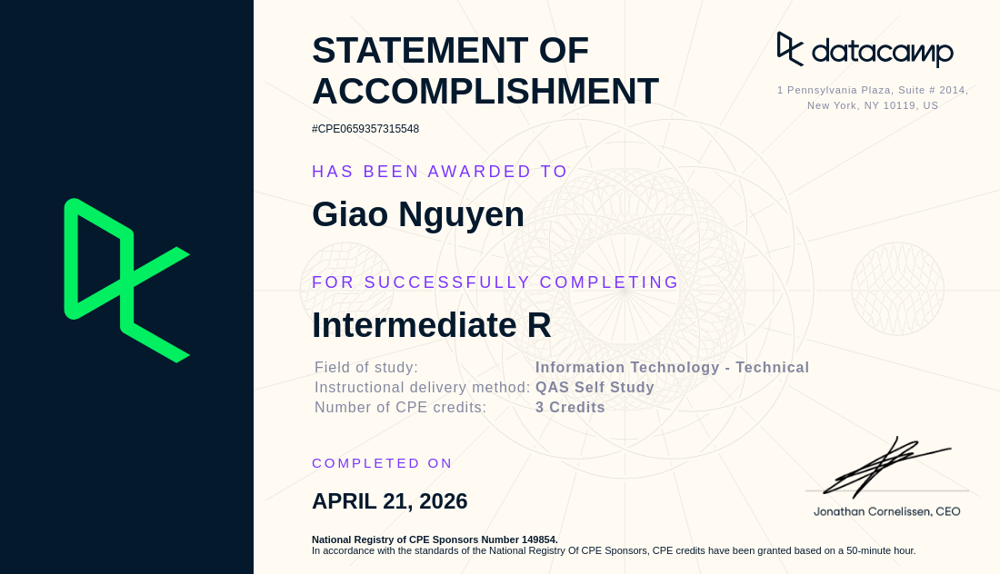

RMIT Health Navigator — Medibank OSHC
A research-led concept app helping international students navigate the Australian healthcare system and their Medibank cover. Persona-driven, with a dashboard, modules and enquiry flows.
Portfolio 03 — Data Analytics
Master of Analytics student turning numbers into direction — from SQL queries and statistical models to segmentation and storytelling for stakeholders.
Experience & education
Master of Analytics
RMIT University · Melbourne
Expected Dec 2026
Administrative & Data Assistant
H-TAS Accounting Agency · Ho Chi Minh City
Jul 2021 — Jun 2022
Bachelor of Business — Marketing
RMIT University · Melbourne
Graduated
Selected projects
A research-led concept app helping international students navigate the Australian healthcare system and their Medibank cover. Persona-driven, with a dashboard, modules and enquiry flows.
At H-TAS Accounting Agency, I used advanced Excel to reconcile discrepancies and streamline reporting — 1,000+ monthly entries at 100% accuracy.
Market research and segmentation analysis to inform a targeted acquisition campaign — part of 10+ applied projects combining marketing questions with analytical methods.
Certifications

Joins, aggregations, subqueries and CTEs. Certified April 2026 — the core toolkit for day-to-day analytics.

Statistical programming fundamentals — data frames, control flow, functions and packages. A foundation for analytical reporting.
Tools & skills
Resume
Here's the analyst-focused one-pager.
Download PDF